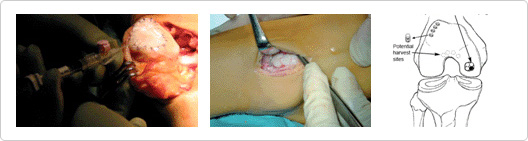

Cricoid lamina transplantation is a surgical procedure that slows down severe arthritis and preservesthe original joints by transplanting cartilage when cartilage of the knee joint has been badly damaged by the cartilage tear or the early stages of arthritis.
